E2E-Test-Modul
1. Überblick
Das e2e-tests/-Modul ist ein separates Maven-Modul auf Root-Ebene, das serviceübergreifende End-to-End-Tests mit Selenium WebDriver ausführt. Es verifiziert alle relevanten UI-Use-Cases der Plattform aus Benutzersicht im echten Browser (STK-052).
Im Gegensatz zu den Unit-Tests (MockMvc) und Integrationstests (Testcontainers-PostgreSQL) in den einzelnen Services testen die E2E-Tests die vollständige Kette von Browser über Thymeleaf-Rendering, Spring MVC, Application Layer bis zur Datenbank.
Die Architekturentscheidung für Selenium WebDriver ist in ADR-0033 dokumentiert. Die modulübergreifende Architektur ist in SWA-035 beschrieben.
3. Technologie-Stack
Die E2E-Test-Infrastruktur (SWR-078) basiert auf folgenden Technologien:
| Technologie | Zweck |
|---|---|
Selenium WebDriver 4.x |
Browser-Automatisierung |
Testcontainers-Selenium |
Chrome-Container (kein lokaler Browser nötig) |
Testcontainers-PostgreSQL |
Datenbank-Container pro Service |
Spring Boot Test |
Service-Start im Testkontext |
JUnit 5 |
Test-Framework mit Extensions |
AssertJ |
Fluent Assertions |
4. Page Object Model
Jede Thymeleaf-Seite wird durch ein Page Object abstrahiert. Das folgende Klassendiagramm zeigt die Vererbungshierarchie:

6. Ausführungsmodi
Die E2E-Tests können auf drei Arten ausgeführt werden (SWR-078):
6.1. Lokal (Entwickler)
./mvnw verify -Pe2eTestcontainers startet automatisch PostgreSQL- und Chrome-Container. Voraussetzung ist eine laufende Docker-Installation.
6.2. CI/CD (GitHub Actions)
Ein separater GitHub Actions Job führt die E2E-Tests nach dem regulären Build aus. Screenshots und HTML-Reports werden als Artefakte archiviert.
6.3. Release (Pflicht)
Das Release-Script (scripts/release.sh) führt die E2E-Tests als Pflichtschritt vor dem Release aus. Ein Fehlschlag bricht den Release-Prozess ab.
# Im Release-Script:
./mvnw clean verify --batch-mode --no-transfer-progress
./mvnw verify -Pe2e --batch-mode --no-transfer-progress7. Testszenarien
7.1. Blog-Content öffentliche Ansichten (SWR-079)
Die BlogPublicViewE2ETest-Klasse verifiziert alle öffentlich zugänglichen Seiten:
| # | Szenario | Verifiziert |
|---|---|---|
1 |
Landing Page zeigt Featured und Recent Posts |
SWR-025, SWR-026 |
2 |
Post-Liste mit Volltextsuche |
SWR-038 |
3 |
Post-Detailansicht via Slug mit Markdown-Rendering |
SWR-039, SWR-040 |
4 |
Impressum und Datenschutz erreichbar |
SWR-028 |
5 |
404-Seite bei unbekanntem Slug |
- |
7.2. Blog-Content Autoren-Workflows (SWR-080)
Die BlogAuthorWorkflowE2ETest-Klasse verifiziert authentifizierte Autoren-Aktionen:
| # | Szenario | Verifiziert |
|---|---|---|
6 |
Post erstellen (Login → Formular → Speichern → Sichtbar) |
SWR-037, SWR-076 |
7 |
Post bearbeiten und aktualisieren |
SWR-037, SWR-077 |
7.3. Authentifizierung und Registrierung (SWR-081)
Die AuthenticationE2ETest-Klasse verifiziert die Auth-Workflows:
| # | Szenario | Verifiziert |
|---|---|---|
8 |
Login mit internem Account |
SWR-016 |
9 |
Registrierung mit Validierung |
SWR-060 |
10 |
Erfolgsseite nach Registrierung |
SWR-060 |
11 |
Break-Glass Admin-Login |
SWR-044 |
8. Anforderungsabdeckung
| Requirement | Beschreibung | Status |
|---|---|---|
STK-052 |
E2E-Selenium-Tests für alle relevanten UI-Use-Cases |
Design |
SWR-078 |
E2E-Test-Infrastruktur mit Selenium WebDriver |
Design |
SWR-079 |
E2E-Tests: Blog-Content öffentliche Ansichten |
Design |
SWR-080 |
E2E-Tests: Blog-Content Autoren-Workflows |
Design |
SWR-081 |
E2E-Tests: Authentifizierung und Registrierung |
Design |
SWR-082 |
E2E-Tests: Admin-Workflows (User/Tenant) |
Design |
SWR-083 |
E2E-Tests: SuperAdmin Tenant-Verwaltung |
Design |
SWA-035 |
E2E-Test-Modul Architektur |
Design |